Route & Mark Manager
The Route & Mark Manager lists routes, tracks, waypoints, and layers that are currently loaded into OpenCPN. It allows you to view and modify those navigation objects and their components. The Route & Mark Manager has tabs for
Getting Around
Persistence
Navigation objects in OpenCPN, except for “Temporary layers”, are persistent between OpenCPN sessions. Navigation Data Backup discusses data persistence more fully.
Show/Hide Eye
You can toggle the visibility of active objects by clicking the “eye” to the left of the object name on each line. For waypoints the eye is replaced by the icon shown on the chart for the waypoint. A red X across the “eye” (or waypoint icon) means that the object is invisible.
Sort by Columns
Objects can be sorted by their column header in the Route & Mark Manager. For example, clicking “Route Name” will cause the routes below to be sorted alphabetically. Clicking again reverses the order.
Selection by Ctl - Left-click
You can select multiple objects in the Routes, Tracks, or Waypoints tabs by holding down the CTRL key and left-clicking the objects or by holding the SHIFT key and selecting the first and last object of a group.
Properties by Double Click
Double-clicking on a route, track, or waypoint brings up its Properties dialog. It's a shortcut for selecting the object and clicking the Properties button.
Export & Import GPX Files
You can export and import routes, tracks, waypoints, and layers using the GPX transfer format. This lets you save your routes and marks to external files so you can have more than the active ones - for example, to do route planning or archive existing data.
- GPX format is supported by a wide variety of programs.
- You can have as many external files as you wish, there are no limits on the number of eternal files.
- Use this for passage planning by saving multiple possible routes for a passage.
- Export routes and tracks for historical-log purposes.
- Prepare layers as an aid to navigation en route.
Keeping a lot of active routes in OpenCPN makes for a cluttered chart display. It also slows the program and makes it use more system resources. Imagine a word processor where every document you ever created was displayed unless you made it invisible. The “Export selected” and “Import GPX” buttons work like the “Save” and “Load” options in most programs. Just as you wouldn't save all your word processing documents in a single giant file, it's not efficient to export all your navigation objects into a single file.
It is more efficient to export each route or track to a separate file. Click on the object, click on the “Export selected” button, name the file, and navigate to the folder in which you want it saved. If you save each route and track in its own file you can import them individually. There is more discussion of a strategy for creating routes at Create Route.
The “Export All Visible” button is useful for making a quick backup copy of all your navigation objects but the resulting file is cumbersome to work with. It is also useful for creating a GPX file that is to be loaded as a layer. Read more at Layers.
Routes
A route is a set of two or more points you wish to visit in a given sequence. Route points can be defined as the route is created or they can be previously defined waypoints or route points. For more information about creating routes read Create Route.
- The route points have exactly the same properties as the isolated waypoints, but does not show in the waypoint tab, to avoid clutter. To create a route that uses real waypoints, create them first and join them with the route tool.
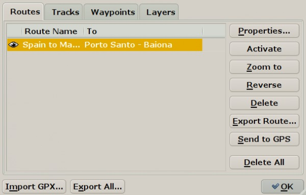
Click the "eye"
to the far left on the line with the route to toggle if the route is displayed or hidden on the chart. A small dialog let you choose if existing marks included in a route will also become invisible. When a route is turned visible, all the shared waypoints are also made visible. Once a route is deleted, such a mark will go back to be a “normal” waypoint.
To Sort routes
Click “Route Name” or “To”
Properties
This button brings up a new dialog with settings that can be changed for each route. 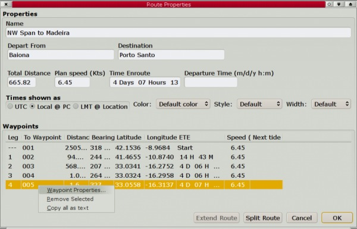
Wpt is right-clicked
A new dialog has popped up. The waypoint properties can be reached and edited. For example, change the default name, “005” in this case, to something more appropriate. Read more in the Extended Marks section. The waypoint can also be deleted. The last entry, “Copy all as text” copies all Route Properties for pasting into a text or Spreadsheet document.

Plan Speed
The overall planned speed for the route. The speed for each leg can be set by going to the waypoint Properties→Description tab for the waypoint that starts the leg, and write in the speed. For example “ VMG=9.7”. [Unfortunately this approach presently excludes writing descriptions for the waypoint. One or the other, be warned!] The Plan Speed value is persistent and will be used for further routes, unless changed. The default value is 6.0 knots.
Departure Time
For Planning: With no departure time the ETE (Estimated Time En route) is calculated. Route is Inactive and normal calculation is ETE. The ETE will be calculated from the First Waypoint of the Route. 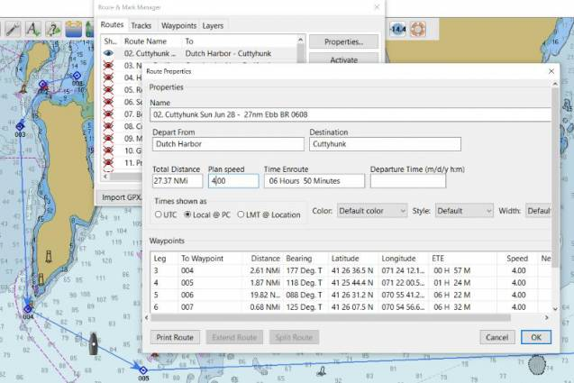
ETA for Planning - Date & Time
- Route can be Inactive or Active.
- Enter a Departure Date and Time eg: 06/07/2014 14:00 and the ETA will be calculated.
- Make sure to press “Enter-Return” after entering a departure time. This guarantees that the entered time is used in calculations.
- The ETA will be calculated from OwnShip to the first Waypoint of the Route and then for each waypoint.
- Note the Active Waypoint Console.
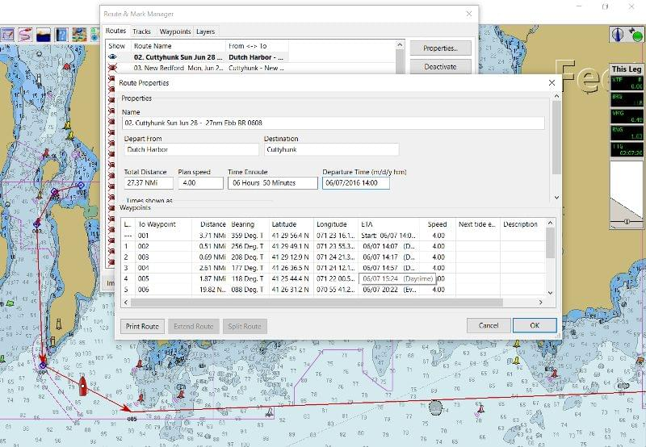
ETA Planning - Now
- Route can be Inactive or Active with first WP active.
- To enter the present time, enter “>” (meaning: “Now”) in the departure time box. This works provided “Time shown as” → Local@PC is selected.
- Press “Enter” and all the times in the “ETA” column will change.
- “>” differs from entering the same time manually, say “06/04/2016 14:23”.
- Distance from Ownship to first Waypoint (active) will be shown with ETA's for all waypoints in the route. Calculates departure Now from the current boat position, including the distance to the first waypoint of the route Use prior to leaving harbour, all calculations pass through the very first WP of the route and ETA is calculated from the boat position through the first waypoint and then to the end of the route.
- Note the Active Waypoint Console.
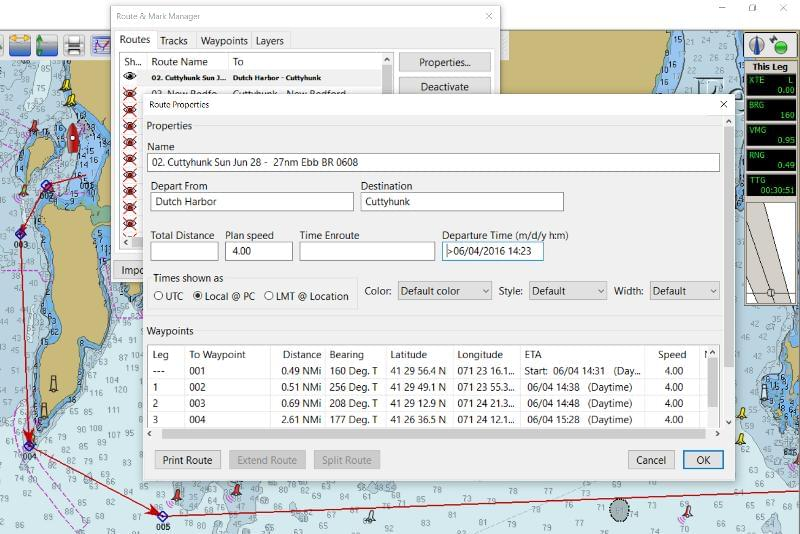
ETA Planning - Now from Intermediate WP
If the Route is Active and an intermediate Waypoint is Active, say WP5, then “- ”>“ - issued at 14:00 on 06/04/2016 - calculates departure “Now” from the current boat position, including the distance to the currently “active waypoint” of the route. Waypoints before the active waypoint are left empty.
ETA - During Passage
- Set Route “Active” Route & time shown as “Local@PC”.
- If you are simulating this condition you may need to right click on the next WP and pick “Active”.
- On an ocean passage, after a week of sailing, calculate ETA to the following WP.
- Set the route as “active” & next WP as “active”.
- Then, when entering ”>“=“now” as Departure Time, all the ETAs are from your real position TO THE NEXT WP, not to the beginning of the route.
- The ETA to the active waypoint is from Ownship to the WP. Note the Active Waypoint Console.
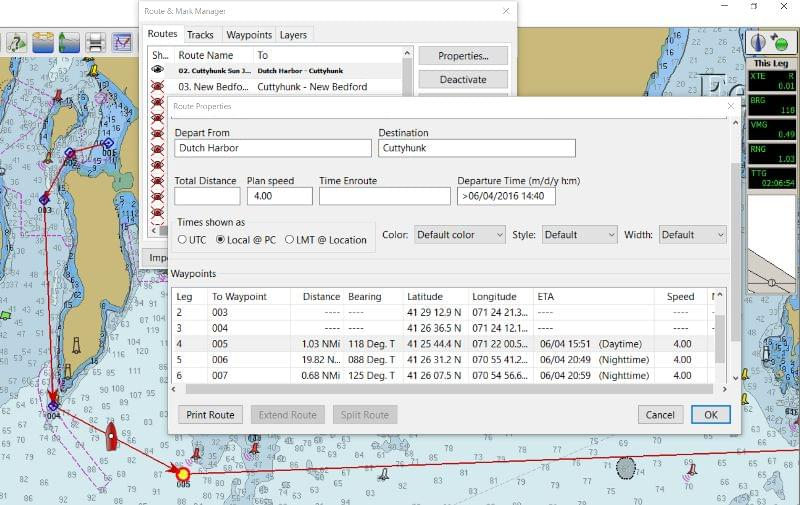
Time UTC is a new name for GMT. LMT is a local mean time based on the present longitude. For Local Zone Time one can also enter the keyword “Now”.
Color Set the displayed color of the track or keep the default.
Style Solid, dashes, dots, a combination or keep the default.
Width Set the width of the track or keep or keep the default. Marking a line with the leg number and the destination Waypoint in the Properties Dialog also marks the Waypoint on the chart with a blue square.
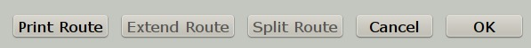
The lower part of the Route properties dialog now has
Print Route
Print Route button. It is possible to first select what features to print before being sent to the normal print routine.
Extend Route
Extending is possible only when it is obvious, what should be joined with the current route (current=visible in the Dialog).
- Eligible are all visible route points shared with, or lying nearby to the current route's endpoint. If there is exactly 1 such point, then it is considered obvious, and the Extend button is enabled. If there are more, some should be hidden before proceeding, until just 1 remains.
- Routes are extended forward, based on the geographic location, next route point must be very near, as when mouse-extending the route. If the next route point is to far away for extending, just create the joining leg and extend twice.
Split Route
For splitting, the split point is selected as the row in the listing. The point-of-split becomes part of both new routes (shared) or tracks (cloned). Original route-track is deleted.
- Here is a basic example of first splitting then extending. The test route is shown below *
- Split Test_A In the Route Managers property dialog for the route we have selected a waypoint where we would like to split the route. The “Split Test” Route now consists of two parts, that has been renamed. *
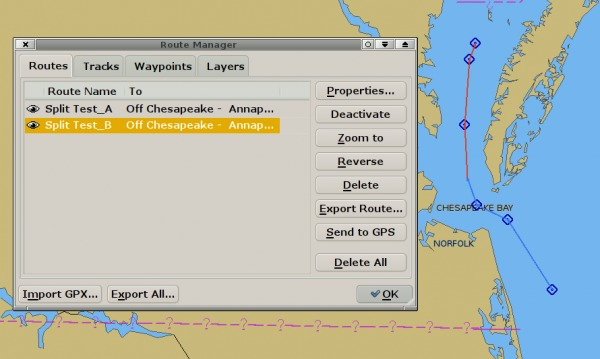
- Next we extend the first leg “Split Test_A” with the second leg “Split Test_B”. This extended route is now named “Split Test_B_plus.
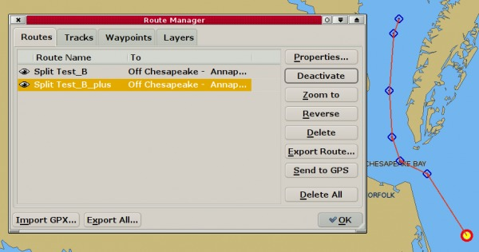
Activate-Deactivate
Activates-Deactivates a route marked in the left part of the window.
Zoom to
Zooms in on a route marked in the left part of the window.
Reverse
Reverses a selected route. It's possible to cancel the reverse operation through a confirmation dialog. *
Delete
Deletes selected route or track. Use the Shift key to mark multiple routes for deletion. This also work in the other Route manager tabs.
Export Route
Save the route on your computer for later use (import)
Send to GPS
Send the Route to your GPS. Pressing the button activates a dialog were an output port is selected. This port does not have to be listed in “Connections” as it is an independent feature. This choice also appears in the right click menu for routes and waypoints. For Garmin Users, make sure that the ToolBox→GPS→”Use Garmin GRMN-GRMN (Host) mode for Waypoint and Route uploads” box is ticked. The reason for this is that Garmin units cannot accept route uploads via NMEA0183. This is a “design feature” of all Garmin receivers.
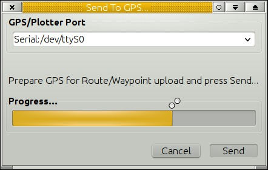
Delete All
Be careful. If you know you have saved the routes on your computer and are able to import the again, this is a simple way to clear the screen from routes. Better be safe than sorry, so save before deleting, if you want to be able to use the routes again.
Import
Import one or more previously saved Routes, or Routes from other gpx compatible applications. It is possible to select and import multiple routes. The default waypoint icon bitmap is a circle. This kicks in if the icon in the imported gpx-file is not recognized.
Export All Visible
Saves all visible routes, waypoints and layers, in one gpx file. This is done through a normal file saving dialog.
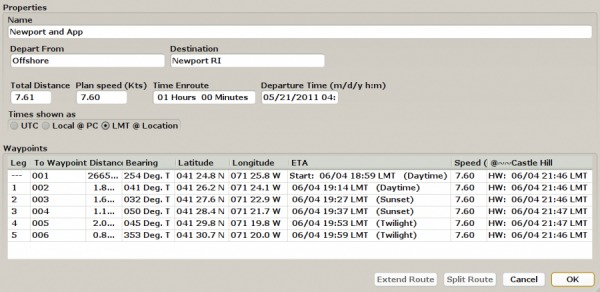
Tidal Column - Use and activation
To Show tidal heights in the column, open the “Tidal Height Curve Dialog” for an individual tidal station so that it is shown on the screen as below. The tidal situation for this station will be tabulated along all route points in the route properties dialog.
- It is essential to enter a departure time and a planned speed.
- Once “Enter” is pressed the tidal column will show the nearest High or Low water considering the ETA at each waypoint.
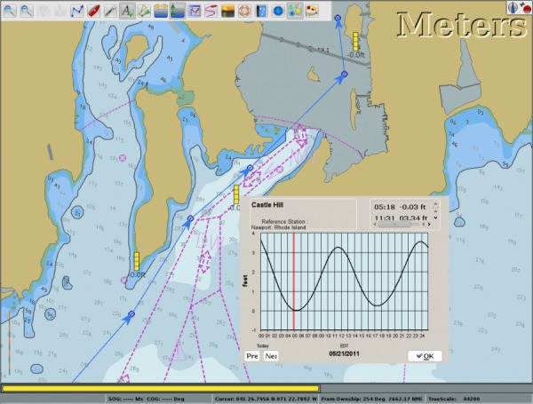
- If no tide dialog for any station is open and a waypoints name contains the string @~~<name>, for example “@~~York Spit Light”, then the tide report for the closest station with matching name is shown in the tide column for this waypoint. The most appropriate tidal station for each waypoint can thus be selected.
- When entering a departure time the ETA, Expected Time of Arrival will be shown, instead of ETE, Expected Time En-route.
- The individual waypoints “Description” field can contain the setting of planned speed specific just to the next route leg (e.g. “VMG=4.5;”) and-or the specification of Estimated Time of Departure from this waypoint (e.g. “ ETD=2/14/2011 12:00;”), allowing for planning extended stopovers. Time can be specified as UT, LMT or local zone time at the PC (default).
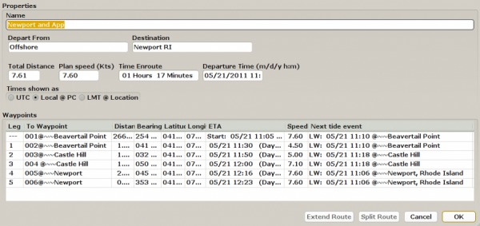
Tracks
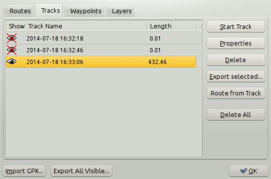
Make sure that you have read all about Automatic Daily tracks and track Highlighting in the Documentation on the Own Ship.
Eye
The visibility of tracks is controlled by clicking the “eye” on each line.
Sorting
Tracks can be sorted by clicking the column headers. Tracks are extended backward, based on the time-stamp sequence, a track is selected, which ends as the latest one before the start of current track. Tracks are extended as a single segment if they share the extending point. If they have no common point a new “empty” segment, with no visible track, is added.
Joining
Joining two tracks (i.e. extending a track) results in just track one remaining. It may look like two tracks but the Route Manager treats it as a single track.
Merge Selected Tracks
An alternative to “Extend Track” where two separate tracks are joined. The difference is that Merged tracks are visibly joined by straight track-lines. Read on for instructions on merging tracks.
- If you have ever hit the Track icon by mistake, or closed down OpenCPN in the middle of a passage, you know that it's very frustrating to have a voyage split up in a number of different tracks that are not joined together. This can be fixed.
- Just select any number of tracks in the Track tab of the Route Manager window, right click the mouse to bring up the context menu, and choose to “Merge Selected Tracks”. The selected tracks will be merged in chronological order, with the track properties (name, color etc) of the resulting track keeping those of the earliest track in the selection.
Copy as text
Copies the track name, unless it's the default time stamp, and the track distance. The result of clicking the merge button.
Reduce Track Data
- Do you have have massive amounts of tracks and finds them bogging down OpenCPN? This feature is for you!
- It is available from the context menu in the Track Manager. Right click on an existing track, and then click “Reduce Data…” .
- Pick one of the options, it reduces the amount of points in an existing track while maintaining the specified maximum error between the original track and the reduced track. Testing on an old OpenCPN track or an imported track, with an error setting of 10 or 20 meters tracks, will, in many cases, reduce the size to less than half and one can't really see the difference.
- Tracks made with the new intelligent dynamic tracking available in OpenCPN will not reduce much, unless a large error is tolerated.
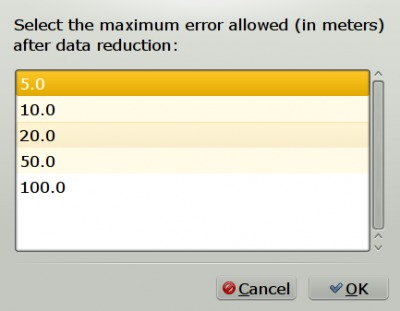
Track Properties
The track properties dialog is similar to the route properties dialog above. There are some obvious differences as a track describes something that took place in the past and a route is planning for the future. Track properties also has an Advanced tab that works similar to the Extended Marks dialog.
Waypoints
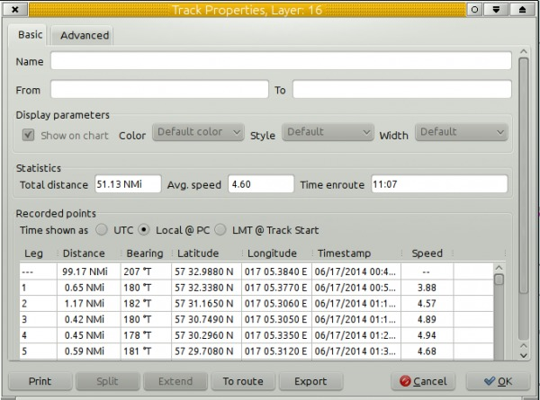
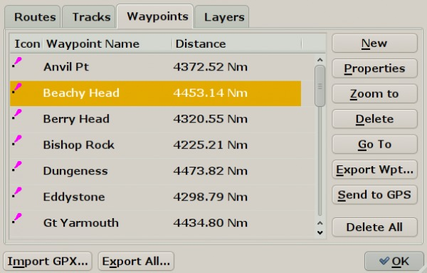
- Control the visibility of each waypoint by clicking the waypoint icon to the left on each line. Sort the waypoints by clicking the column headers. * New. Create a new waypoint. This brings up the waypoints properties dialog. The default position is set to the current position of “Own Ship”.
- Properties. All about the dialog in Extended Marks
- Zoom to centers the chart display on the waypoint.
- Go To. Makes an instant route from present position to the mark and activates the route. A similar instant route is created by right clicking and selecting “Go To Here” without first creating a mark. This instant route will be listed in the Route Tab.
- Export Wpt and Send to GPS buttons behaves similar to corresponding buttons for Routes.
- Delete All, does not delete any Man Over Board marks. All other marks are deleted.
- Use the Shift key to mark multiple waypoints for deletion. This also work in the other Route manager tabs.
- Refer to Route & Mark Manager
- Refer to Layers
- Refer to AtoN
- Refer to Using Routes
FAQ
Is there a way to change the WP 'Icon' in a route?
http://www.cruisersforum.com/forums/f134/change-route-wp-icon-192133.html
To change a single WP icon of a route go to the properties window with a right click on the WP icon. To Globally change a Route's WP Icons is not possible because the icon Diamond is hard coded in the source. However it is possible to change globally the WP icon for normal WPs, the triangle. To do that search a line with “DefaultWPIcon=…” in opencpn.ini.
Also see Use your own Icons
Navigation Data Backup (Navobj.xml)
- Where are Routes, Tracks and Waypoints Stored?
- I lost my route, is there a backup?
- Can I find a missing track?
See Navobj